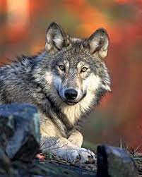
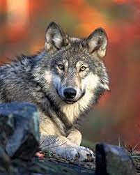

Educar a tu perro
Te brindamos la mejor informacion y herramientas para educar a tu perro de manera respetuosa, sin castigos.


Formas de educar a mi perro
Educacion Respetuosa
Educar a nuestro perro de forma respetuosa, comúnmente denominada “educación canina en positivo”, se basa en entender cuáles son las necesidades integrales de la especie y cuáles son las motivaciones de cada individuo en particular.Este tipo de educación tiene como principio básico el fomentar el aprendizaje en contextos agradables y libres de estrés. Se ha comprobado científicamente que los perros que viven en entornos libres de castigo aprenden mucho más rápido y que esos aprendizajes son más duraderos en el tiempo. Este tipo de educación no solo es, a nuestro criterio, la más respetuoso para con los animales, sino que también la ciencia nos da evidencias de que es la forma más eficiente de educar. No debemos ocupar el rol de líderes autoritarios, sino de facilitadores de aprendizajes
Educacion por Dominancia (no recomendada y te explicamos porque)
Aquella educación que entiende que debemos posicionarnos como los “dominantes” propone que todos los problemas de comportamiento que pueden manifestarse en un perro tienen su origen en un problema jerárquico. Según esta escuela, en ocasiones denominada “adiestramiento canino tradicional”, los humanos fallamos a la hora de ser el líder de nuestro perro y por eso comienzan a manifestarse ciertos comportamientos indeseados.
La solución consistiría entonces en ordenar el orden jerárquico de la manada. Esta forma de educar a nuestros perros no tiene fundamentos científicos y queda obsoleta ya que está basada y justificada en estudios que se han hecho con lobos en cautiverio. Estos estudios mostraban que en un grupo de lobos ellos competían de forma agresiva para obtener el rol de líder o alpha. El lobo alpha es quien dirige a los demás, por lo tanto todos los lobos naturalmente competirán para obtener este rol. Hay al menos dos cosas que no tienen en cuenta los que basan y fundamentan sus métodos de educación con perros en este estudio. Por un lado, esta investigación se hizo en lobos en cautiverio, lo cual no representa el comportamiento real de los lobos.
No debemos olvidar que los perros no son lobos pequeños, sino que son una especie que ha pasado por cientos de años de domesticación y de convivencia con los humanos.
Quienes estudian a los lobos en estado salvaje dan cuenta de que los comportamientos agresivos en las manadas son escasos o nulos, y que ningún lobo intenta pelear con el líder para quitarle su rol de lobo alpha. Por otro lado, no debemos olvidar que los perros no son lobos pequeños, sino que son una especie que ha pasado por cientos de años de domesticación y de convivencia con los humanos. Entender la educación de un perro desde la perspectiva de la dominancia puede tener grandes consecuencias negativas en la vida del animal. Desde esta perspectiva, se justifican métodos y técnicas que generan malestar en el perro, como el uso de castigos. Llamamos castigo a cualquier estímulo que genere miedo o dolor en el perro, desde correcciones físicas, confrontaciones, gritos, técnicas de roll over, etc. Los métodos de educar basados en castigos dañan el vínculo con el perro y existen evidencias científicas de que pueden generar o agravar problemas de agresividad (“Survey of the use and outcome of confrontational and non-confrontational training methods in client-owned dogs”, 2008) Por otro lado, también existen evidencias de que los métodos educativos basados en comprender las necesidades del perro y en enseñarles con el uso de refuerzos (premios), no solo que favorecen el bienestar del perro sino que dan mejores resultados (“Dog training methods, their use, effectiveness and interaction with behaviour an welfare”, 2004).
Entender la educación de un perro desde la perspectiva de la dominancia puede tener grandes consecuencias negativas en la vida del animal.


¿Que tengo que saber antes de educar a mi perro?
Antes de comenzar con la educación de nuestros perros, es necesario tener claro cuáles son las necesidades de los perros. Cuando se pregunta qué requiere un perro para tener sus necesidades satisfechas es habitual que las respuestas sean incompletas. Esto ocurre ya que durante mucho tiempo se ha popularizado la idea de que el perro como especie tiene necesidades menos complejas que el ser humano. Lejos está esto de ser la realidad.
El perro tiene necesidades complejas al igual que los seres humanos, solo que estas necesidades son propias de la especie canina y no humana.
 
